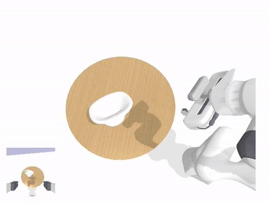

Goal-Auxiliary Actor-Critic for 6D Robotic Grasping with Point Clouds
{kind=link}

6D robotic grasping beyond top-down bin-picking scenarios is a challenging task due to the variety of objects and the large continuous action space. In this work, we propose a novel method for learning closed-loop control policies for 6D robotic grasping using point clouds from an egocentric camera. We introduce a goal-auxiliary actor-critic algorithm, which uses grasping goal prediction as an auxiliary task to facilitate the policy learning. The supervision on grasping goals can be obtained from the expert planner for known objects or from hindsight goals for unknown objects. Overall, our learned closed-loop policy achieves over 90 % success rates on grasping various ShapeNet objects and YCB objects in simulation. More information can be found in project webpage.
Manipulation Trajectory Optimization with Online Grasp Synthesis and Selection

In robot manipulation, planning the motion of a robot manipulator to grasp an object is a fundamental problem. A manipulation planner needs to generate a trajectory of the manipulator arm to avoid obstacles in the environment and plan an end-effector pose for grasping. While trajectory planning and grasp planning are often tackled separately, how to efficiently integrate the two planning problems remains a challenge. In this work, we present a novel method for joint motion and grasp planning. Our method integrates manipulation trajectory optimization with online grasp synthesis and selection, where we apply online learning techniques to select goal configurations for grasping, and introduce a new grasp synthesis algorithm to generate grasps online. We evaluate our planning approach and demonstrate that our method generates robust and efficient motion plans for grasping in cluttered scenes. More information can be found in project webpage.
6D Object Pose Tracking with the Deep Iterative Matching Network

Pose estimation has been studied extensively by computer vision and robotics researchers. While direct pose regression from RGB image is limited by various factors, DeepIM (Deep Iterative Matching Network) takes an iterative approach to refine initial pose estimation by matching rendered image against real image. This project mainly addresses the performance of DeepIM on YCB dataset and tracking, trained with only synthetic data. This natural extension works surprisingly well even under occlusions. More information can be found in project webpage.